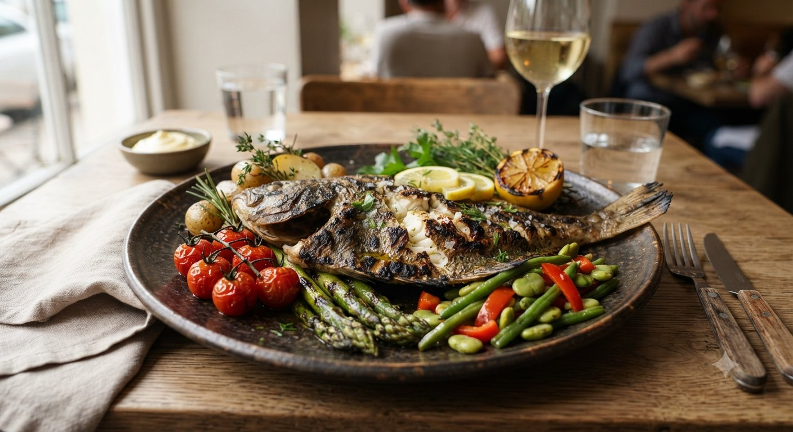
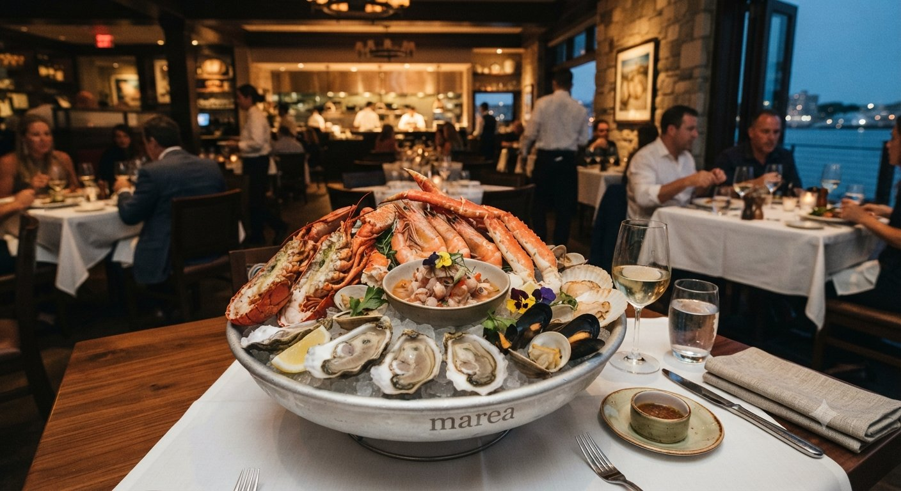
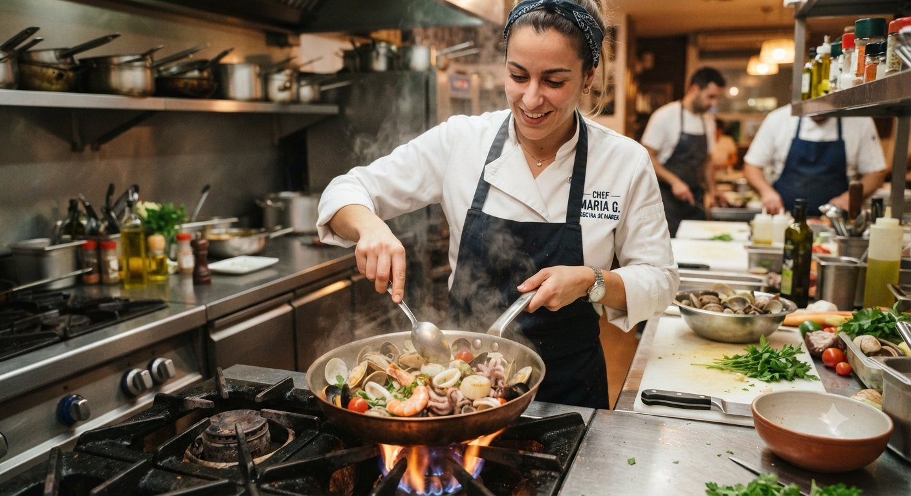
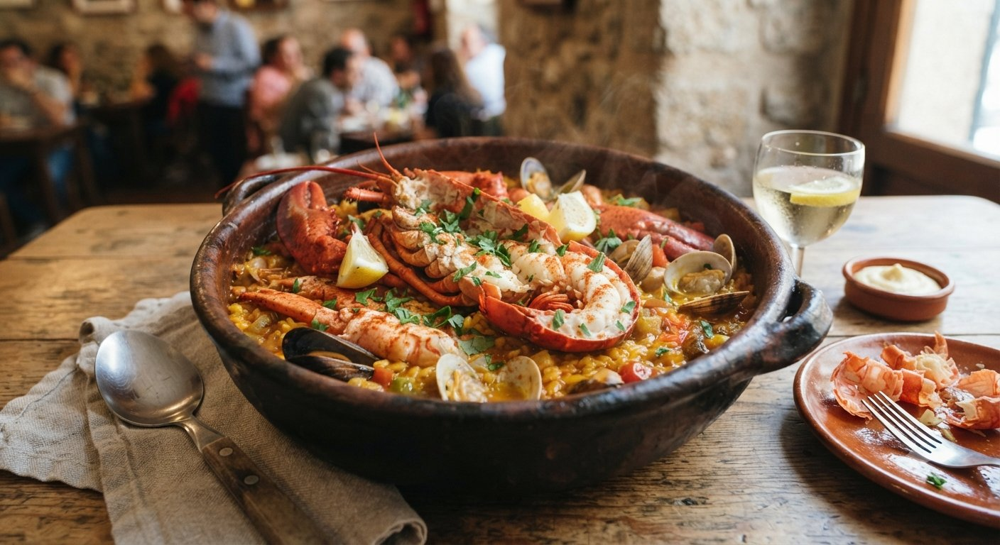
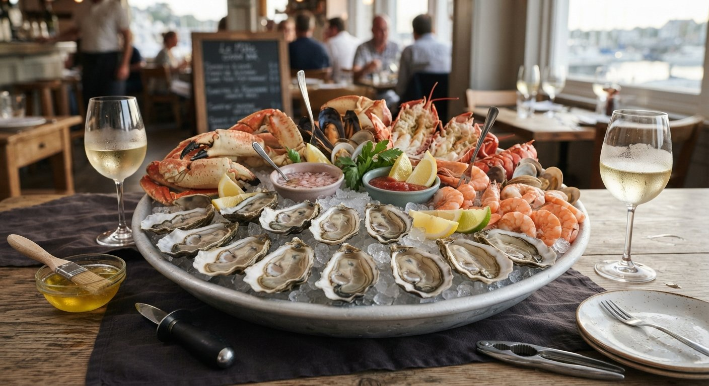
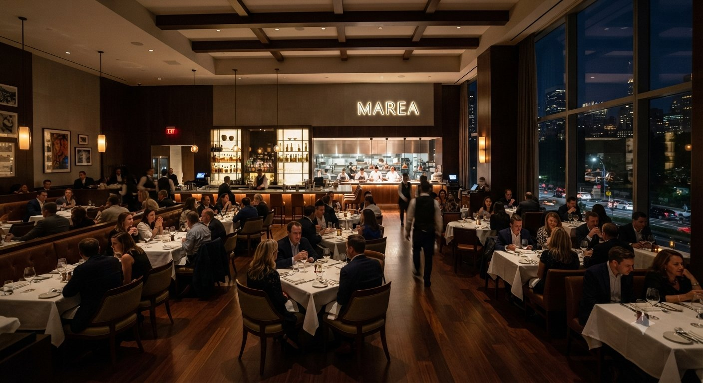
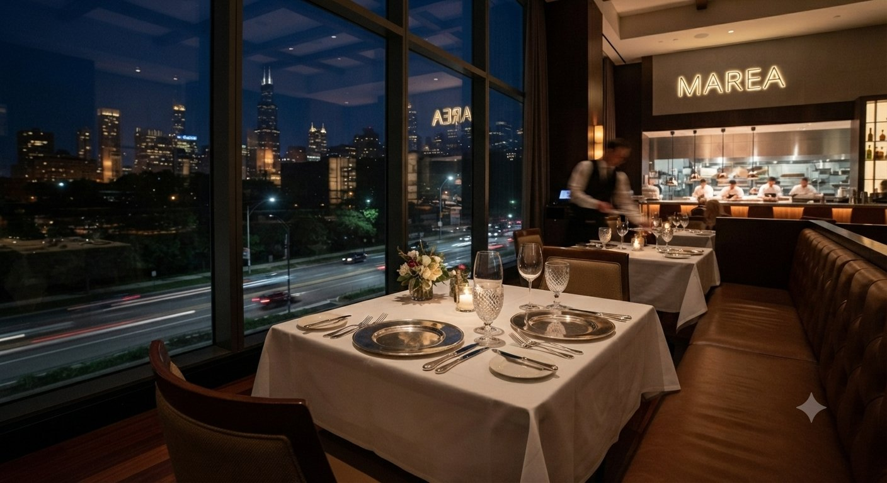
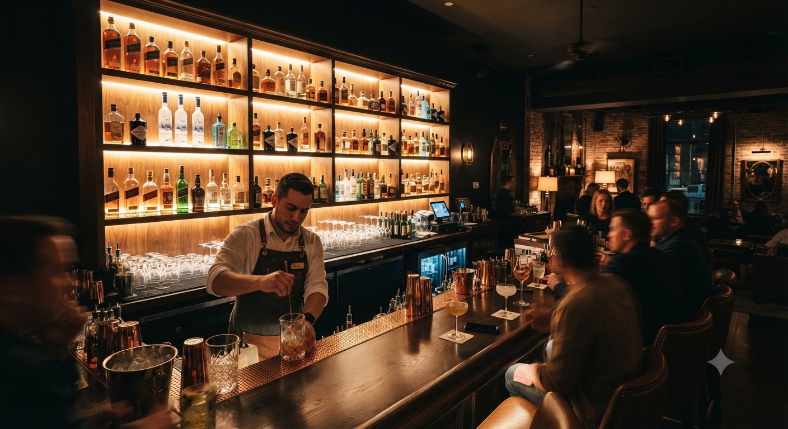
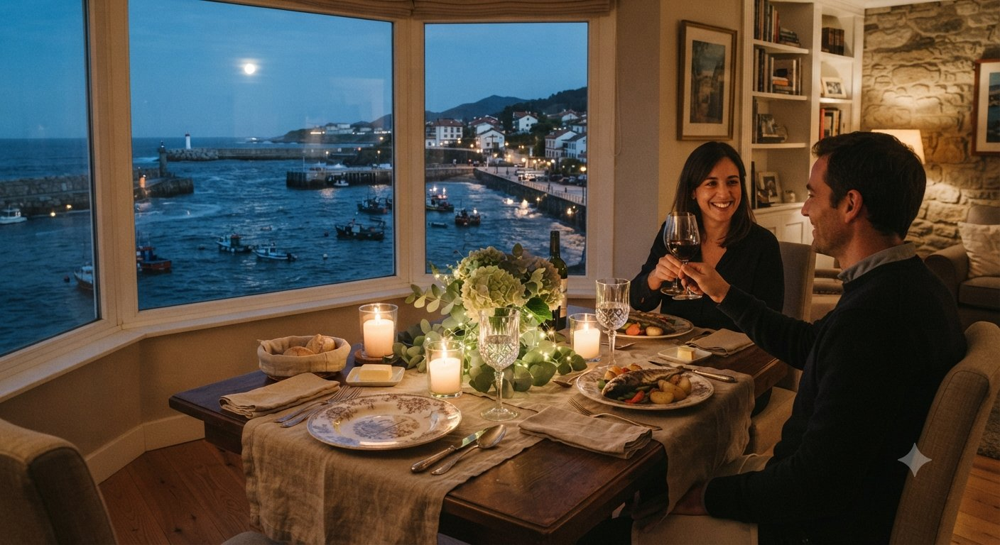

Rodaballo a la brasa
$520 MXNCon jugo reducido de marisco y verduras de temporada.


En Marea trabajamos con lo que el mar entrega cada mañana. La lonja marca la carta, no al revés: el pescado y el marisco llegan el mismo día y se cocinan con técnica clásica y mano ligera, dejando que el producto hable por sí solo.
La sala se pensó para acompañar esa misma idea: materiales cálidos, luz baja y mesas espaciadas, para que la conversación y el plato tengan el protagonismo.
Descubrir el menúUna selección breve de la carta, la que mejor resume nuestra cocina.

Con jugo reducido de marisco y verduras de temporada.

Cocción lenta en cazuela de barro, para compartir.

Ostras, gambas y centollo, servidos sobre hielo.
Un espacio pensado para que el tiempo pase despacio.



«El producto fresco no necesita artificio: solo tiempo, respeto y una brasa bien encendida.»Cocina de Marea
Recomendamos reservar con antelación, especialmente los fines de semana. Atendemos grupos y celebraciones bajo petición.
Calle del Puerto 12, Ciudad Juárez, Chihuahua
Martes a domingo · 13:00–16:00 / 20:00–23:30
+52 656 859 6503 · iygd505@gmail.com
